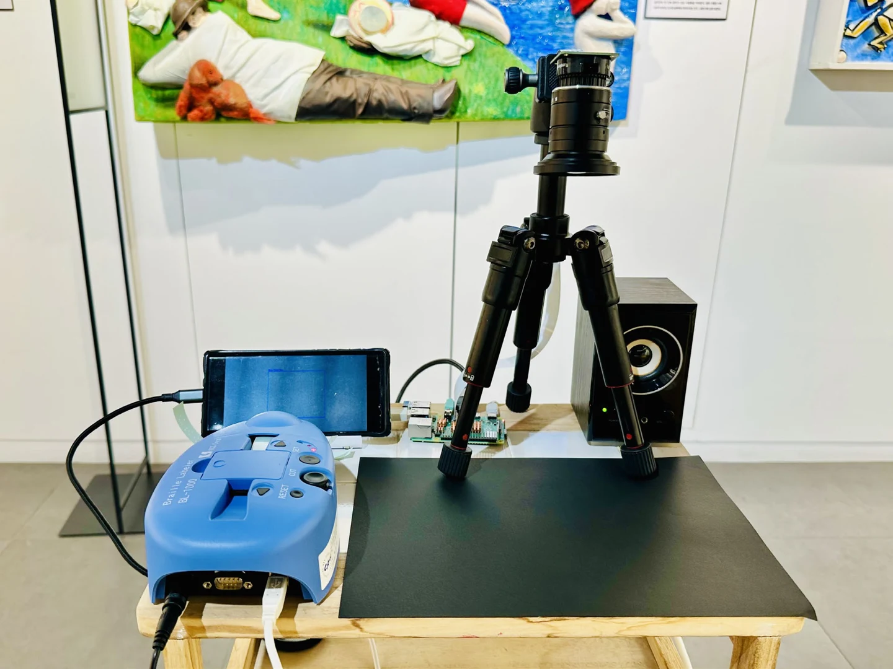
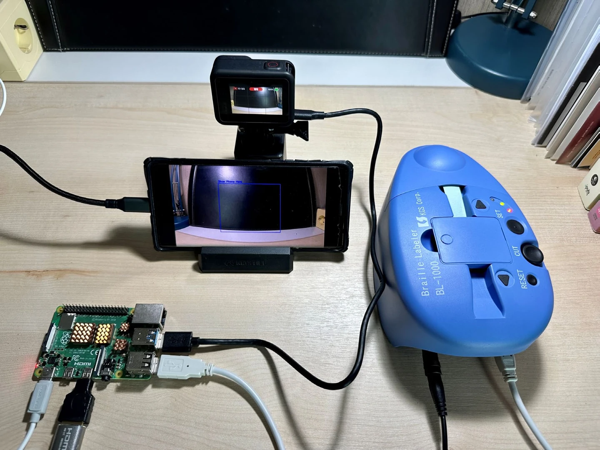

2025–2026 / Accessibility / Multisensory Interaction
I Can See 2
A photo reader for blind and low-vision people. It turns photographs into detailed audio descriptions and concise Braille summaries, offering different ways to experience the same image.
Making photographs accessible
I began with a question: how can a photograph be experienced through senses other than sight? Visual media changes constantly, while printed Braille materials carry fixed information. I wanted to build a system that could respond to an image brought by the person using it.
The prototype reads a photograph displayed on a smartphone. AI-generated descriptions become two complementary outputs: spoken descriptions that convey more detail, and short summaries printed in Korean Braille.

How it works
Place a photograph under the camera
A smartphone displaying an image is placed in the capture area. The system waits for it to remain still, then detects the screen and extracts the image region.
Describe the image
The image is sent to an AI model, which generates a detailed description and a shorter summary intended for Braille reading.
Convert the descriptions
The detailed text is converted to speech. The summary is processed by a custom Korean Braille converter based on the 2024 Revised Korean Braille Regulations.
Listen and read by touch
The system plays the audio description and sends the Braille data to a BL-1000 printer, producing a physical output.
Different senses, different amounts of detail
Speech and Braille offer different ways of encountering information. Audio can describe the scene and the relative positions of objects in greater detail. Printed Braille needs a more concise structure because the length of the output affects how it is read.
This led me to separate the information into two layers. Language connects the photograph to the auditory and tactile outputs, while the amount of detail is adapted to each medium.
Prototypes and feedback
The first prototype connected image interpretation to Korean Braille conversion and printing. The second added complementary audio descriptions. Early feedback from staff at Chung-Ang University’s Disability Student Support Center informed the hardware prototype.

I also demonstrated the prototype to staff at the Siloam Center for the Blind. Their feedback emphasized concise Braille output and richer spatial information in the audio descriptions, including where objects are located in the photograph.
These were preliminary staff demonstrations. Evaluation with blind and low-vision participants remains a next step.
Implementation and contribution
This is an individual project. I worked on the concept, hardware setup, image capture, AI integration, Korean Braille conversion, printing, speech output, and prototype documentation.
- Computing and capture
- Raspberry Pi 4B, Pi HQ Camera, Python, OpenCV
- AI and audio
- OpenAI image interpretation and text-to-speech
- Tactile output
- Custom Korean Braille conversion and BL-1000 Braille Printer